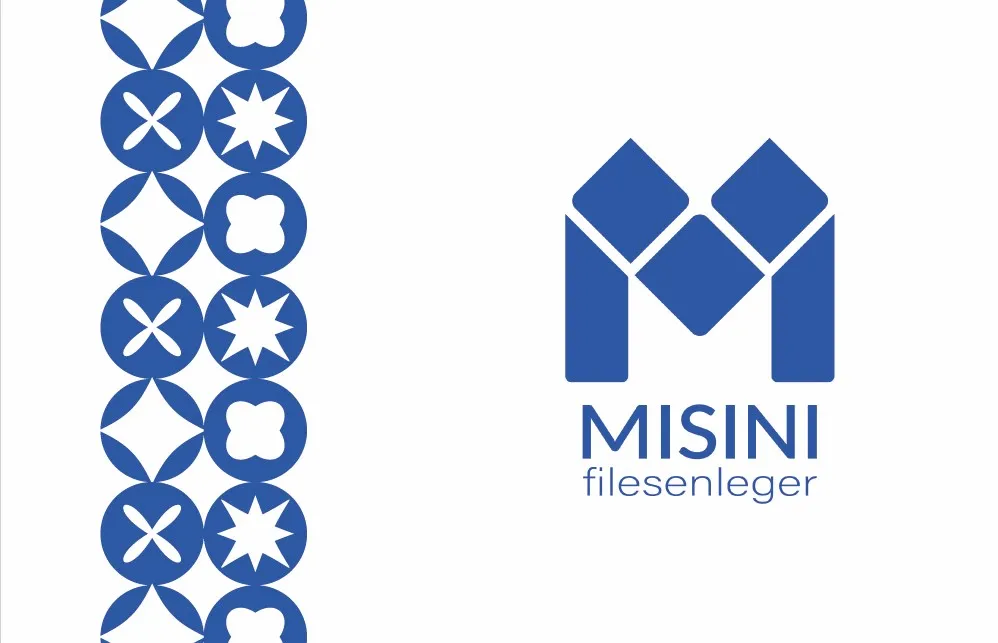
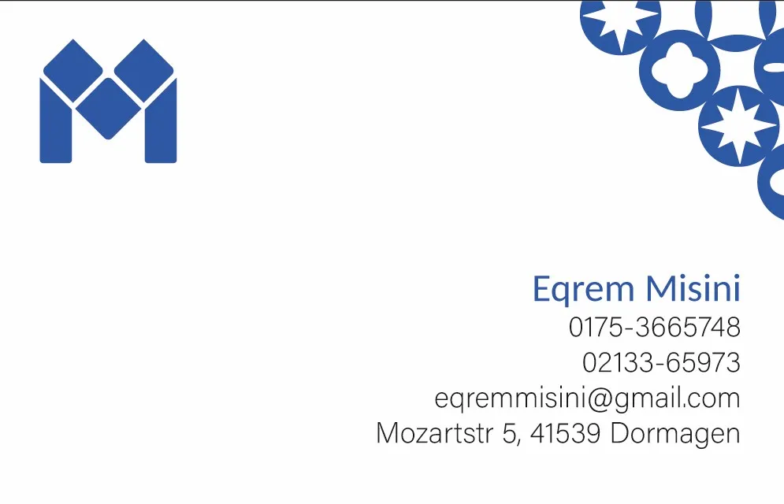
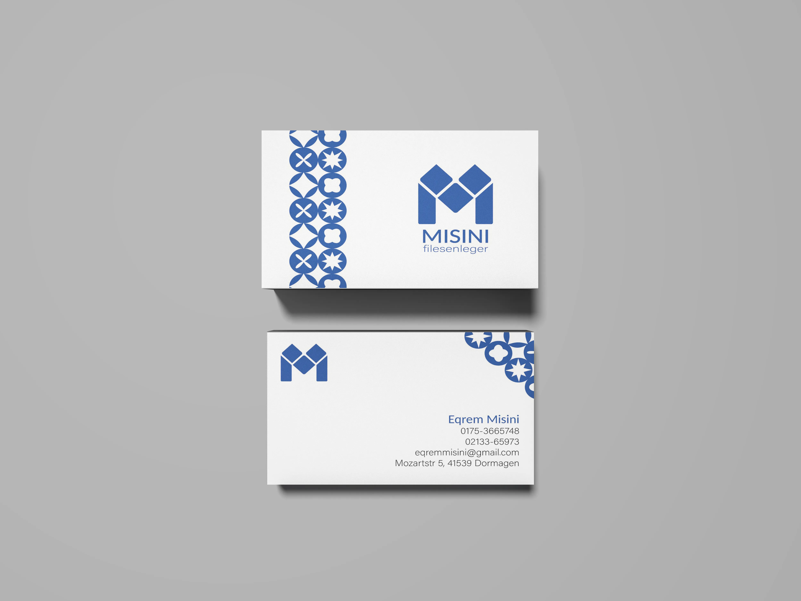

BrandingBranding
MisiniMisini
Brand identity and stationery for Misini piastrelle — a tile shop reborn through pattern and precision. Custom tile-inspired geometry meets clean, architectural business card layouts.Identità di marca e coordinato cartaceo per Misini piastrelle — un negozio di piastrelle rinato attraverso pattern e precisione. Geometrie ispirate alle piastrelle incontrano layout puliti e architettonici.